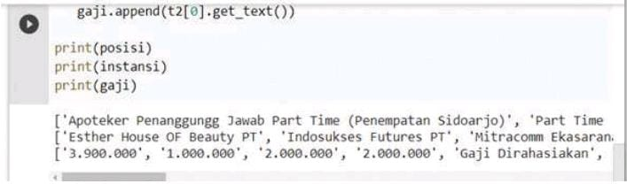
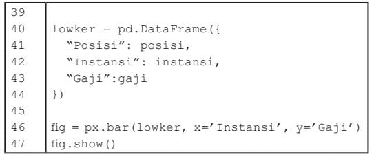
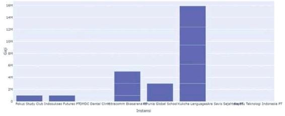
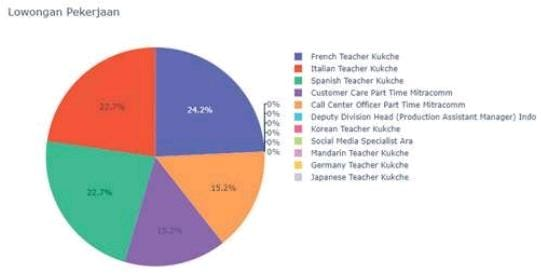
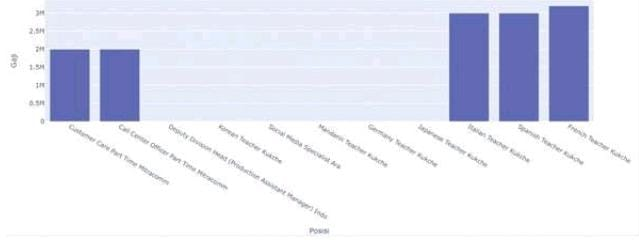
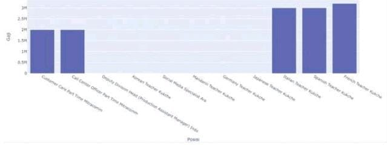

A. Pengenalan Perkakas Analisis Data
1. Google Colaboratory (Google Colab)
Google Colab atau Google Colaboratory adalah salah satu lingkungan pengembangan aplikasi terintegrasi yang disediakan oleh Google secara online (Online IDE). Karena sifatnya yang online, maka pengguna tidak perlu melakukan instalasi dan dapat langsung menggunakan Google Colab untuk menulis program dan melakukan pengolahan data dari Internet. Selain itu, Google Colab juga memiliki banyak fungsi serta library yang dapat digunakan untuk membantu pengolahan data, termasuk untuk melakukan scraping.
- 1. Buka Google Colaboratory melalui link https://colab.research.google. com/ Jika diminta untuk Sign-In, silakan masuk dengan menggunakan akun Google/GMail.
- 2. Buat catatan baru melalui pilihan NEW NOTEBOOK seperti diperlihatkan pada Gambar 6.3. Notebook adalah penamaan untuk file kerja di dalam Google Colab, tempat membuat berbagai macam dokumen, termasuk teks dokumen/catatan dan teks kode program Python.

Perhatikan bahwa Google Colab memiliki beberapa bagian area kerja yang hampir serupa dengan berbagai IDE yang lain. Beberapa objek yang ada di Google Colab:
- 3. Mulailah untuk membuat kode program Python dengan mencetak sebuah teks. Ketik satu baris kode tersebut di area Konten Notebook.
- 4. Untuk menguji hasil dari kode program tersebut, tekan tombol “Run cell” (bulat dan segitiga) yang ada di pojok kiri area Konten Notebook. Jika berhasil, layar output akan menghasilkan teks sesuai yang diharapkan di bawah Konten Notebook. Setelah berhasil, kita siap untuk membuat program Python menggunakan Google Colab ini.
2. Python
Python sebagai bahasa pemrograman yang populer untuk analisis data karena memiliki banyak library pendukung. Bahasa pemrograman digunakan untuk memberi perintah pada komputer. Selain Python, ada juga bahasa lain seperti C yang dipakai dalam Algoritma dan Pemrograman. Dalam materi ini, Python hanya dijadikan alat bantu untuk analisis data, sehingga tidak perlu mempelajari aturannya terlalu dalam. Konsep algoritma dan pemrograman juga disinggung sebagai latihan untuk memahami cara eksekusi setiap proses analisis data.
- a. Cetak Data (print)
- b. Pemberian Nilai Data (Assignment)
Perintah yang paling sederhana dalam bahasa pemrograman ialah perintah untuk mencetak suatu nilai atau data (output). Mencetak data dalam Python dapat dilakukan dengan menggunakan perintah print. Kalian dapat mengubah parameter atau isi di dalam tanda kurung print dengan data yang lain, misalnya menggantinya dengan “Selamat Datang”. Setelah kode program dieksekusi atau dengan menekan tombol Run, program akan menampilkan data seperti yang diharapkan.
Tanda petik digunakan untuk mencetak data string, yang berupa nilai alfanumerik dan tanda baca, yang tidak memiliki nilai aritmatika. Artinya, string “2” ditambah (atau lebih tepatnya dijejerkan) dengan string “3”, hasilnya string “23”. Tidak masuk akal string “2” dikurangi atau dikalikan string “3”, sedangkan jika bilangan 2 dikurangi atau dikalikan 3, pasti ada nilai bilangannya. Sampai di sini, apakah kalian paham? Silakan, diskusikan dengan teman dan guru kalian.
Pemrograman Python di sini serupa dengan pemrograman C di unit pembelajaran Algoritma Pemrograman. Di program-program selanjutnya, kalian akan belajar Python dengan pendekatan prosedural seperti halnya belajar C. Untuk melihat hubungannya, kalian bisa melihat kembali tabel perbandingan bahasa Python dan bahasa C di unit pembelajaran Algoritma Pemrograman.
Selain mencetak langsung dari data yang ada di dalam tanda kurung, data lain yang pengisiannya di luar tanda kurung juga dapat dicetak. Pengisian atau pemberian nilai data ini disebut assignment. Assignment dilakukan dengan menyediakan sebuah nama (variabel) yang kemudian diisi dengan suatu nilai data menggunakan tanda sama dengan (“=”). Perhatikan baris perintah pertama pada gambar di bawah ini. Dalam baris tersebut, variabel bil1 diisi dengan nilai 10. Sebelum ke baris keempat, perhatikan catatan berikut.

Setelah dilakukan penjumlahan dan data nilai hasilnya disimpan ke dalam variabel jumlah, data ini kemudian dicetak pada baris 4. Kita dapat melihat hasil cetak atau keluaran (output) dari variabel jumlah setelah program ditulis lengkap kemudian di-Run. Perhatikan bahwa mencetak dapat dilakukan cukup dengan menuliskan nama variabel yang akan dicetak tanpa menggunakan perintah print, khususnya jika berada di baris terakhir kode program
- c. Banyak Nilai untuk Satu Variabel (Array)
- d. Penelusuran Data/Pengulangan (Loop: for)
Perhatikan bahwa pada variabel bil1, bil2, dan jumlah, kita menyimpan data dengan satu nilai saja untuk setiap variabel. Jika kita mengisi kembali variabel dengan nilai yang lain, nilai yang lama akan hilang atau ditimpa dengan nilai baru. Namun demikian, kita masih bisa menyimpan lebih dari satu nilai dalam satu variabel saja, yang disebut variabel array. Dalam kehidupan sehari-hari, kita akan menemui data yang memiliki banyak nilai, termasuk daftar nilai mata pelajaran Informatika sebuah kelas, misalnya. Menuliskan sebuah array dapat dilakukan dengan menggunakan tanda kurung siku seperti diperlihatkan pada gambar dibawah ini baris pertama.

Karena satu variabel menyimpan banyak nilai, kita dapat menyebutkan nilainilai tersebut sebagai nilai pertama (atau elemen indeks pertama), elemen kedua, elemen ketiga, dan seterusnya. Dalam bahasa pemrograman, mengakses nilai ke-n dari suatu array dapat dilakukan dengan menggunakan kurung siku persis setelah nama variabel array tersebut, misalnya pada baris kedua gambar di atas.
Indeks array dalam bahasa Python atau di hampir semua bahasa pemrograman dimulai dengan perhitungan nol, disebut indeks ke-0. Bilangan 9 ialah elemen dengan indeks ke-1 atau indeks pertama.
Perintah for digunakan dengan menyertakan sebuah variabel baru untuk menelusuri setiap elemen di dalam variabel yang diberikan (setelah perintah in).
Karena for merupakan perintah blok (mengandung beberapa perintah lain), perlu diakhiri dengan tanda titik dua. Perintah-perintah yang dimaksudkan untuk ikut berulang mengikuti for ini dibuat menjorok ke kanan misalnya 1 tab.
Kita dapat menggunakan perintah lain untuk mengulang, seperti perintah while. Kita dapat bereksplorasi terkait penggunaan while ini.
- e. Uji Kondisi (Branch: try)
Sebuah array bisa diisi dengan data yang bervariasi, misal data bilangan dan data tekstual (karakter dengan tanda petik). Namun, bagaimana pengolahan data yang bervariasi seperti ini?
Perhatikan bahwa data yang dicetak dengan dibagi dua terlebih dahulu ini memiliki variasi data seperti data bilangan dan data tekstual. Padahal, pembagian hanya bisa dilakukan pada bilangan dan oleh bilangan. Maka, akan terjadi kesalahan jika pembagian dilakukan pada data bilangan dan data tekstual. Perhatikan pesan kesalahannya berbunyi “Line 3. Unsupported operand types for /”, yang dibagi harus berupa bilangan dengan bilangan, bukan string/teks.
Lalu, bagaimana jika kondisi data yang akan diolah bervariasi seperti di atas? Ada kalanya, user atau pengguna program memasukkan data yang benar. Namun ada kalanya, mereka melakukan kesalahan saat memasukkan data. Oleh karena itu, program yang dibuat harus memiliki mekanisme untuk menangani variasi data tersebut. Bagaimana penanganannya? Misalnya, jika data yang ada berupa bilangan, data langsung dibagi. Namun, jika data tidak bisa dibagi, berikan pesan bahwa data bukan merupakan angka/bilangan. Penanganan ini dalam konsep pemrograman disebut konsep percabangan atau branch. Salah satu perintah dalam Python yang dapat digunakan dalam percabangan ialah pasangan perintah try dan except seperti diperlihatkan pada gambar dibawah ini.
Secara umum, penggunaan blok try-except dapat dijelaskan dengan terjemahannya. Kita mencoba (trying) untuk mengeksekusi perintah-perintah (baris setelah try). Jika terjadi kesalahan, eksekusi akan dilempar/lompat ke baris except dan mengeksekusi baris di dalamnya. Jika tidak terjadi kesalahan hingga akhir perintah dalam try, akan keluar dari blok perintah try-except (dalam hal ini kembali ke perintah for untuk perulangan berikutnya). Dari mekanisme ini, muncul proses percabangan di mana ada pemrosesan data yang membagi bilangan dan mencetak hasil pembagiannya, dan ada pemrosesan data yang tidak mencetak bilangan, tetapi mencetak pesan “Bukan bilangan”.
Blok perintah try-except merupakan salah satu perintah yang digunakan untuk kasus percabangan untuk menguji suatu kondisi, dalam hal ini kasus kesalahan atau tidak. Ada perintah lain yang dapat digunakan untuk menangani kasus percabangan (branch), seperti perintah if dan blok perintah if-else.
- f. Pustaka Kode (Library import)
- 1. Buka Google Colaboratory melalui link https://colab.research.google. com/. Kemudian, buka catatan baru melalui menu File > New notebook.
- 2. Parsing salah satu alamat website lowongan pekerjaan. Gambar dibawah ini menunjukkan kode untuk melakukan parsing alamat website Lowongan Pekerjaan yang digunakan sebelumnya. Ketik beberapa baris kode program berikut di layar Google Colab kalian.
Library atau pustaka adalah koleksi program dan paket yang tersedia untuk berbagai penggunaan. Sebagai contoh, terdapat library Pandas.Kalian dapat mencoba untuk mengetikkan kode program seperti pada gamnbar pertama sehingga menampilkan keluaran seperti gambar ke dua. Perhatikan bahwa sebelum libraryPandas digunakan di Baris 6 (pandas.DataFrame), kita perlu import terlebih dahulu library tersebut di Baris 1. Library Pandas ini dapat kalian pelajari lebih detil dari halaman webnya di https://pandas.pydata.org/.


B. Koleksi Data
Aktivitas inti dilakukan untuk mengenal proses analisis data, khususnya dalam hal mengoleksi data dari situs web, yang dikenal dengan istilah web scraping.

Gambar diatas menunjukkan beberapa langkah yang bisa diikuti untuk melakukan scraping dalam bahasa Python menggunakan editor online Google Colab. Setelah editor siap digunakan, scraping bisa dimulai dengan proses parsing. Parsing adalah mengambil kode program dari sebuah halaman website secara utuh yang masih dalam bentuk kode HTML. Selanjutnya, kode HTML tersebut diproses setiap elemennya untuk mendapatkan data yang penting yang akan dirangkum. Hasilnya berupa kumpulan data yang diperlukan saja (yang diambil dari data mentah HTML yang utuh sebelumnya). Hasil keluaran sebelumnya masih berupa daftar atau array teks data pekerjaan yang mungkin masih sulit dibaca. Data tersebut perlu ditampilkan secara lebih tertata sehingga mudah dibaca. Proses membingkai data atau framing ini bisa dilakukan dengan mudah jika data sudah di peroleh. Salah satu tampilan yang memudahkan pembacaan daftar teks tersebut ialah dalam bentuk tabel. Dengan demikian, kita peroleh hasil dari proses scraping ini dalam bentuk tabel data.
Mari, ikuti pembuatan proyek scraping tersebut dengan mengikuti langkah-langkah berikut.

Jika dijalankan, kode tersebut akan menyalin kode program yang ada di alamat website yang di-request.

- 3. Kita perlu mengolah kode HTML agar dapat mengambil data berupa posisi pekerjaan, instansi pemberi pekerjaan, dan gaji yang ditawarkan. Data tersebut tersimpan dalam tag tertentu pada elemen kode website dan bisa diekstrak menggunakan program. Kode program yang sebelumnya ada dilanjutkan sehingga lengkap untuk mengambil ketiga data tersebut.
- 4. Terakhir, data array yang sudah diperoleh perlu dibingkai ke dalam sebuah tabel agar lebih rapi saat ditampilkan dengan Python. Untuk itu, digunakan kode program yang menggantikan baris sebelumnya, sehingga hasil akhirnya berupa tabel berisi data posisi pekerjaan, instansi pemberi pekerjaan, dan gaji yang ditawarkan.
Jika kode program tersebut dijalankan di Google Colab, keluaran yang dihasilkan berupa ringkasan data dari yang diharapkan saja, seperti diperlihatkan pada gambar dibawah ini.
Jika kode program tersebut dijalankan di Google Colab, keluaran yang dihasilkan berupa tabel dari data yang telah dikoleksi, seperti diperlihatkan pada gambar diatas
Hasil akhir proses scraping data dari website Jobs ID berupa koleksi data lowongan pekerjaan yang diringkas ke dalam sebuah tabel. Bagaimana cara membaca lowongan pekerjaan dari halaman web asli dan hasil scraping? Dengan penyajian seperti pada tabel tersebut, data yang diperoleh akan lebih mudah dipahami serta dapat diolah atau dianalisis. Perlu diperhatikan bahwa tampilan tabel merupakan data pada saat dibuat. Bisa saja hasil keluaran berbeda, bahkan mungkin terjadi error. Langkah-langkah scraping menggunakan bahasa Python bisa dipelajari lebih detail dari tutorial di internet, misalnya di: https://www.dataquest.io/blog/web-scraping-tutorial-python/ . Scraping juga bisa dilakukan dengan bahasa lain seperti PHP atau R, serta menggunakan editor (Integrated Development Environment) yang berbeda.
C. Visualisasi Data
Pada proyek sebelumnya, data website diambil (scraping) dan ditampilkan dalam bentuk tabel. Tabel adalah salah satu bentuk analisis data dasar. Kita bisa melihat persebaran data secara baris per baris dalam bentuk tekstual. Analisis data dapat dilanjutkan dengan mengubah data tekstual tersebut menjadi data visual sehingga lebih mudah untuk dipahami. Data divisualkan dalam berbagai diagram seperti diagram batang, diagram lingkaran, diagram garis, dan lain sebagainya. Berikut ini data pada proyek sebelumnya akan disajikan dalam diagram batang. Sebelum data bisa diolah dan disajikan menjadi diagram, data tersebut perlu dipersiapkan terlebih dahulu. Dalam analisis data, proses persiapan ini disebut pra-pemrosesan data (data preprocessing). Setelah dipersiapkan, baru kemudian data bisa diolah dan divisualisasikan.
- 1. Pra-pemrosesan Data
- 2. Visualisasi Data: Barchart
- import plotly.express as px
Pra-pemrosesan data dilakukan agar data siap diolah. Data perlu dipersiapkan karena sering kali masih mentah atau mengandung kesalahan, sehingga tidak bisa langsung dihitung atau divisualisasikan. Sebagai contoh, pada kasus sebelumnya, data gaji ada yang masih berupa teks seperti “Dirahasiakan”, serta ada yang mengandung titik pemisah ribuan. Dalam bilangan (integer), titik justru bermakna pecahan, sehingga harus diubah terlebih dahulu. Oleh karena itu, data gaji yang masih bertipe teks perlu diubah ke dalam tipe bilangan.
Baris 27–34 pada kode program ini digunakan untuk menggantikan baris 27–30 sebelumnya agar pra-pemrosesan data gaji dapat dilakukan dengan benar.

Untuk membuat tampilan grafik atau diagram, kita dapat menggunakan library Python, yaitu Plotly. Library ini perlu ditambahkan terlebih dahulu di kode program. Cara penambahannya menggunakan import seperti yang sudah dipelajari sebelumnya, seperti berikut.
Selanjutnya, setelah library-nya di-import, kita dapat menggunakan fungsionalitas pada library Plotly untuk membuat diagram. Sebagai contoh, kita dapat membuat diagram batang (barchart) menggunakan fungsi bar().
Dari kode program tersebut, kita akan menghasilkan sebuah diagram batang.
- 3. Prapemrosesan Data Lanjut
- 4. Visualisasi Data dengan Diagram lain
- fig = px.pie(lowker, values='Gaji', names='Posisi', title='Lowongan') 
Jika diperhatikan, beberapa lowongan pekerjaan terlihat menumpuk. Beberapa posisi lowongan pada satu instansi menjadi satu batang saja, sehingga nominal gaji yang ditunjukkan menjadi tidak valid. Hal ini terjadi karena pengelompokan lowongan berdasarkan instansi. Jika dikelompokkan berdasarkan posisi, masalah tetap muncul karena bisa saja terdapat beberapa lowongan dengan posisi yang sama sehingga tetap tertumpuk. Solusinya adalah mengelompokkan lowongan pekerjaan berdasarkan gabungan posisi dan instansi penyedia lowongan. Untuk itu, kode program perlu diubah agar posisi dan instansi tidak lagi berada pada variabel yang berbeda, melainkan disatukan dalam satu variabel (dalam hal ini variabel posisi). Setelah itu, data dibingkai ulang hanya dengan dua item saja, yaitu posisi dan gaji. Terakhir, saat menampilkan diagram batang, item yang digunakan diganti dari instansi menjadi posisi. Dengan cara ini, setiap lowongan akan diperlihatkan secara terpisah sehingga hasilnya lebih valid dan jelas.
 

Setiap diagram dan chart memiliki kegunaan masing-masing sesuai karakteristiknya. Diagram batang, misalnya, digunakan untuk memperlihatkan beberapa item serupa yang perlu dibandingkan. Di sisi lain, diagram lingkaran digunakan untuk memperlihatkan proporsi dari beberapa item yang bisa menjadi bagian utuh dari suatu kasus. Untuk membuat diagram lainnya, kalian dapat mempelajari penggunaanya di alamat ini https://plotly.com/python/basic-charts/ Sebagai contoh, dapat dicoba untuk membuat diagram lingkaran (pie chart), ode program yang sebelumnya menampilkan diagram batang (Baris 45) diganti menjadi kode untuk menampilkan diagram lingkaran seperti berikut.